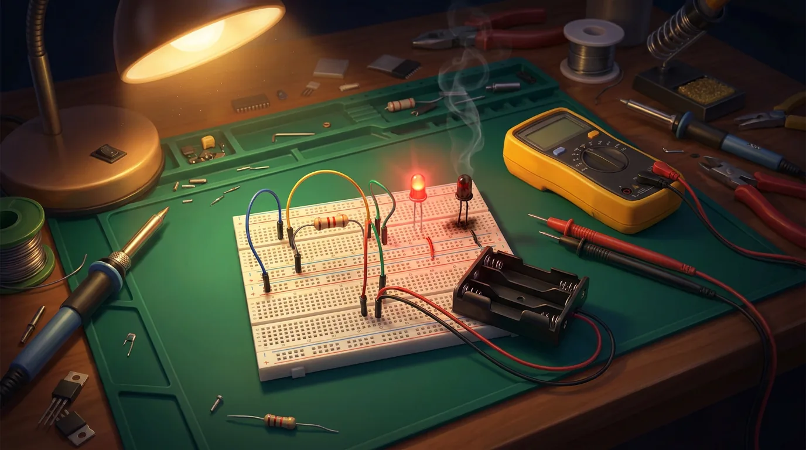

A short course in four media. Read the idea, see it as a diagram, play with it, then build it and measure it with your own multimeter.
voltage current resistance + 6 V − GND

Learn electronics by playing: no experience needed. Sparky, a friendly LED, teaches one idea per level while you build on a simulated breadboard. Watch the current flow, and find out what happens when you leave out the resistor. Chapter 1 has ten levels; the fifteen workbook missions are still there as the Classic lab.
Play the game Free sandbox Classic lab
Best on a desktop screen.
Work down the list. For each step, read first, then play, then build. The numbers in every medium are the same, so you can compare a prediction with your meter.
Voltage, current, resistance: what actually happens in a circuit. 2 min 53 s, narrated. Watch it after step 1, and again before experiment E3.
Change V and R, watch the current, see the resistor heat up. Add an LED.
Place virtual meter probes and check Kirchhoff's laws.
Every workbook layout, step by step, plus the probe quiz.
Three circuits from every starter kit.
The shopping list costs about €15–25. An Arduino starter kit contains almost the same parts, so you can also buy the kit first and keep the board for later. Read the safety rules before you connect a battery.